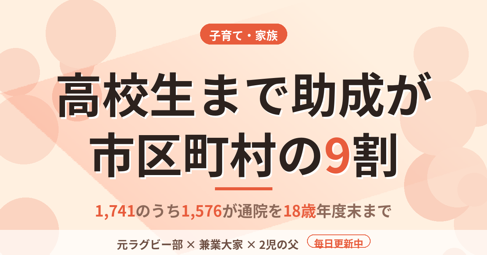

hohemaro15
ラグビー20年、不動産1棟。調べてから書く記録
このサイトについて
小学5年でラグビーを始めて、大学まで20年続けた。大阪の激戦区で6年、同志社大で4年。ポジションはユーティリティバックス。
今はメーカーで設備の電気を担当しながら、兵庫県尼崎市に木造9戸の一棟アパートを運用している。2児の父。
経験談だけで終わらせないために、書く前に必ず制度と統計を調べることにしている。数字が確認できなかった話は書かない。
書いていること
ラグビー
小5から大学まで20年。大阪の激戦区で見たこと、カテゴリが上がるたびに起きたこと。
不動産・資産運用
2016年に検討を始めて2026年に1棟目。判断基準と、断り続けた10年の話。
健康・トレーニング
増量の失敗と成功、サプリで肝臓の数値を悪くした経験、続けている設計。
子育て・家族
2歳と0歳を育てながらの時間の使い方と、資産形成の時間軸。
最近の記事
-
 不動産・資産運用
不動産・資産運用
東京23区の築浅一棟アパートは利回り5.07％。築10年で7.3％を買った僕の位置
2棟目を探すとき、最初は東京も候補に入れて物件の一覧を眺めていた。1棟目に買ったのは、尼崎の築10年の木造9戸で、価格は1億700万円、表面利回りは7.3％。この数字が市場のどのあたりにあるのか、健美家が公表している四半…
-
 ゴルフ
ゴルフ
ゴルフ場の年間利用者数は1億232万人から8,650万人へ。月1〜3回回る僕の位置
社会人になってから、ゴルフは毎年月1回以上、シーズン中は月2〜3回のペースで回ってきた。コースに出ていると人は多いように感じるが、全国で見ると増えているのか減っているのか、考えたことがなかった。日本ゴルフ場経営者協会の数…
-
不動産・資産運用
リラ円は90円台から3円台へ。スワップ狙いで10万円ほど失った僕が金利の中身を読んだ
FXのトルコリラで、スワップポイント狙いの取引をしていた時期がある。毎日少しずつ積み上がる受取額を見て、これは楽な運用だと思っていた。結果は、損失10万円ほどで手仕舞いだった。額は小さいが、仕組みを理解していなかった点で…
-
 ラグビー
ラグビー
7人制は前後半7分で、広さは15人制と同じ。大阪7人制で優勝した僕が通用した理由
高校3年のとき、大阪7人制大会で優勝した。15人制の80分に慣れた体には、1試合14分という時間がずいぶん短く思えた。いま振り返ると、あの短さこそが僕に合っていた。…
-

子育て・家族通院医療費を高校生まで助成する市区町村は1,576。2歳と0歳の父が差を読んだ
子どもが小さいうちは、病院に行く回数が読めない。予定を立てても、熱が出る日は選べない。だから医療費の助成がどこまで出るのかは、家計の項目の中でも先に気になった。…
-
不動産・資産運用
貸主には修繕義務がある。エアコン8.8万円、トイレ1万円。設備の仕事が効いた
1棟目を買って7か月、入居者から連絡が来るたびに「これは誰が払うのか」を考えてきた。本業は化学メーカー設備の電気担当で、設備の見積書を読むのが仕事だ。その感覚が賃貸経営でどこまで通用したか、実際の金額で整理する。…